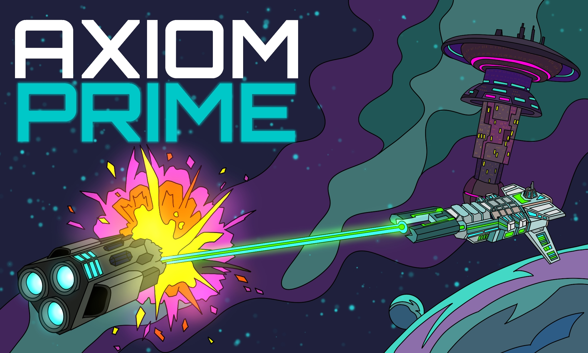
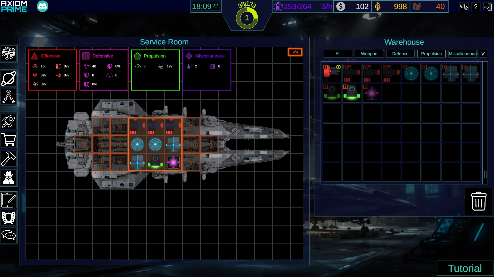
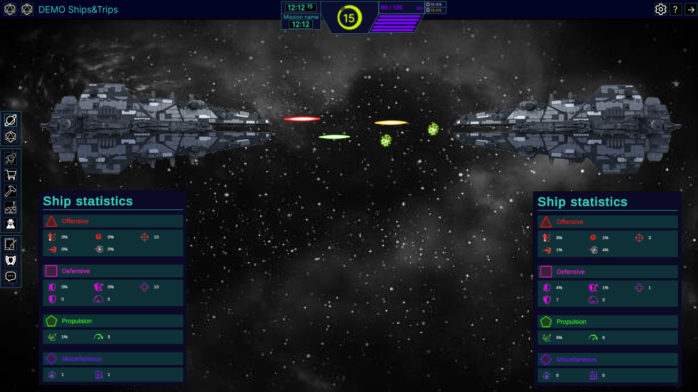

02 / Game development · 2026
Axiom
Prime.
An online idle-style game currently in development, built around a custom backend architecture and a Unity client. The project explores persistent online systems, server-side game logic and communication between the client and backend.



Online game architecture
The project is split between a Unity client and a custom backend. This makes it possible to keep persistent game data and server-side rules separate from the player-facing interface.
My contributions
- Backend architecture.
- Server-side game systems.
- Unity client architecture.
- Client-server communication.
- Frontend UI systems.
- Online game systems.